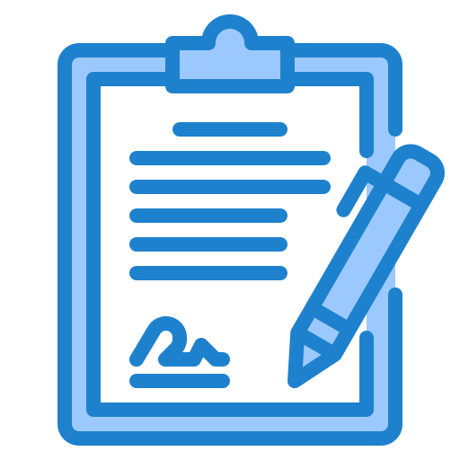
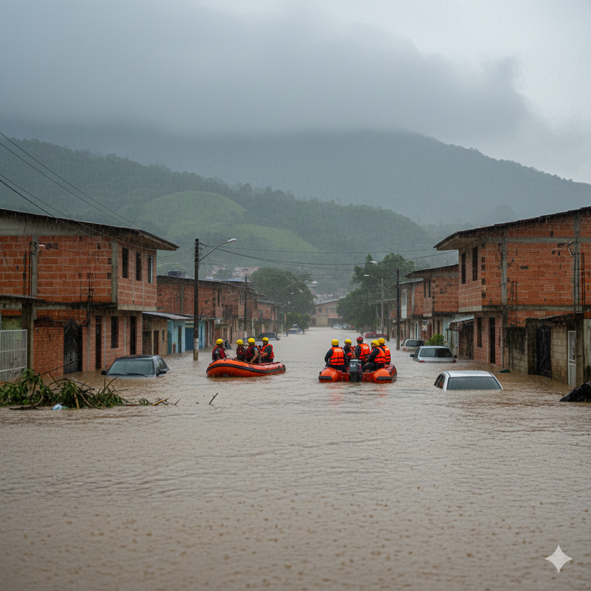
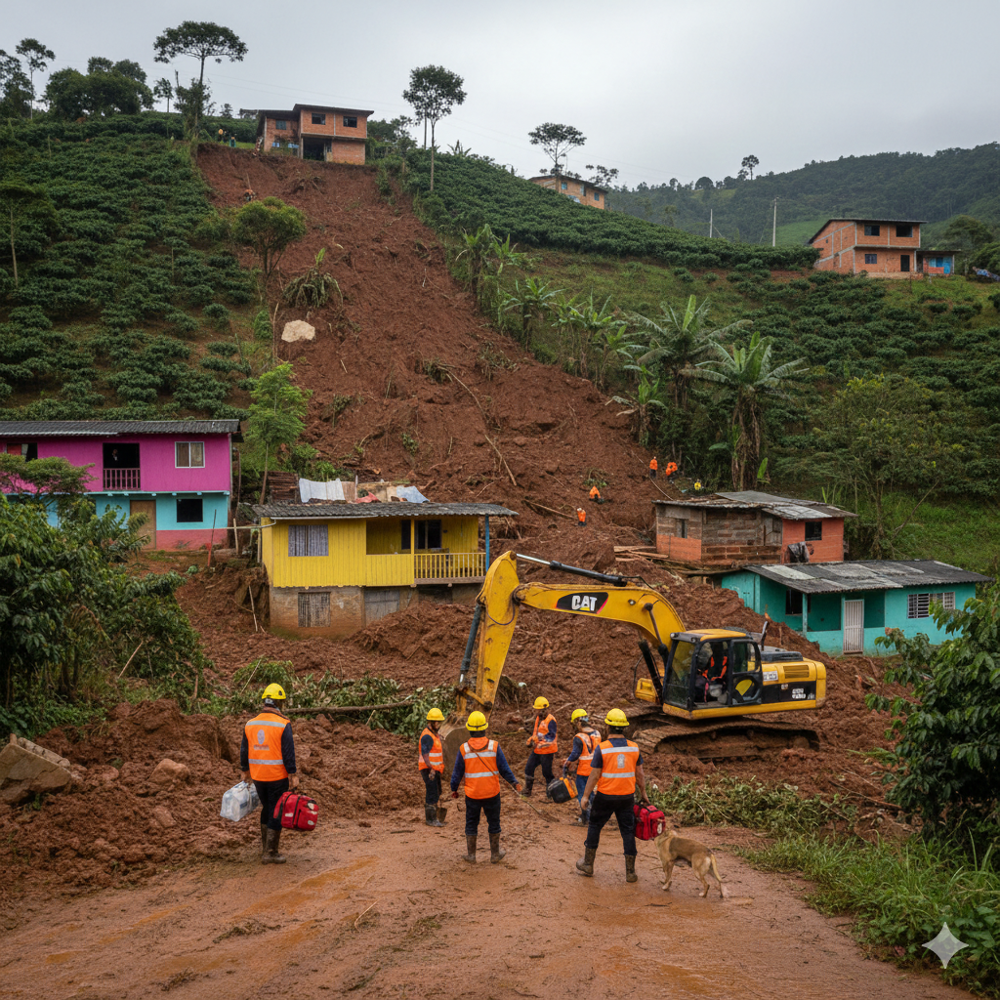
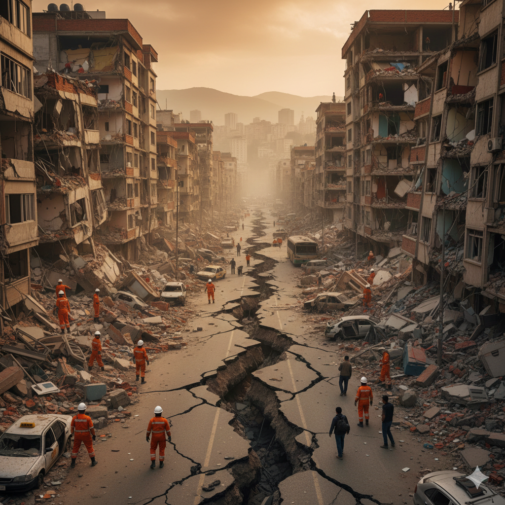
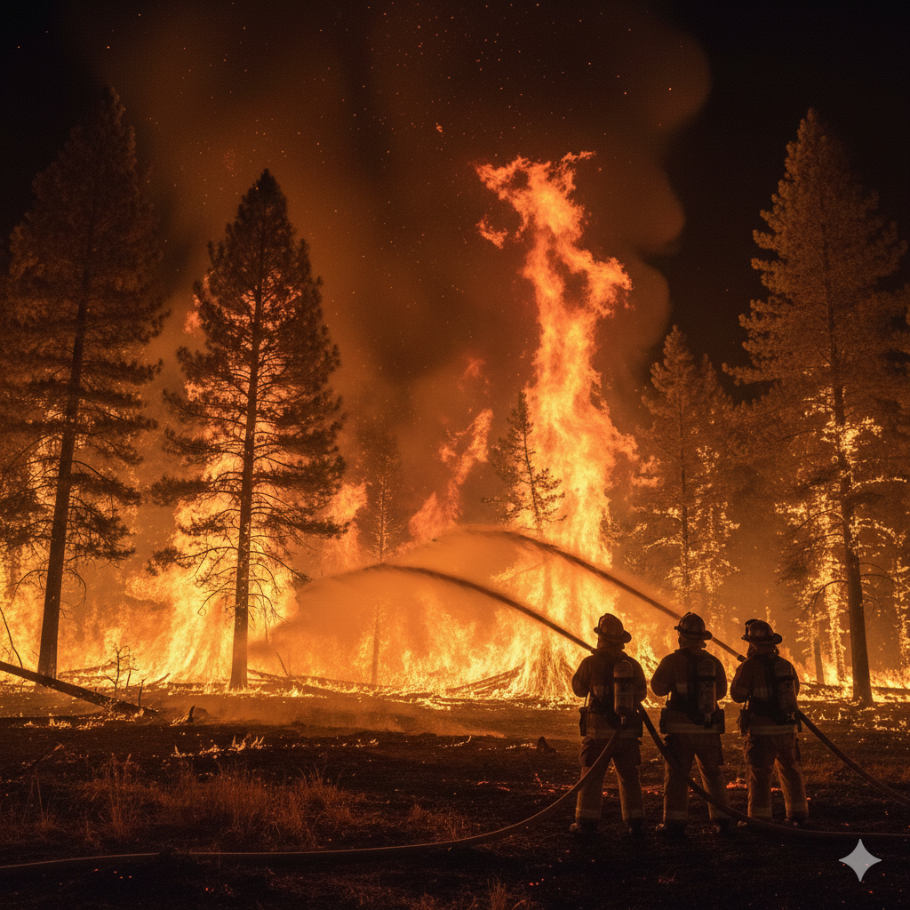

De la adversidad a la prosperidad
Plataforma para el registro de emergencias por desastres naturales y notificación a las autoridades
Quiénes Somos
Descubre cómo Vitaria SOS transforma el registro de emergencias en una experiencia ágil y transparente, conectando a los ciudadanos con las entidades responsables.
Plataforma
Vitaria SOS ofrece una solución digital que permite registrar, gestionar y notificar a las autoridades acerca de los casos de personas afectadas por desastres naturales de manera rápida, segura y accesible.
Nuestro objetivo principal para la creación de este aplicativo web es desarrollar una herramienta de fácil manejo para el registro, almacenamiento y consulta de información acerca de eventos naturales desastrosos con el fin de una correcta identificación de víctimas/damnificados y una atención efectiva por parte de las autoridades.
Conexión con autoridades
La plataforma conecta a la ciudadanía con las entidades responsables de brindar atención y ayuda humanitaria, facilitando el registro de información de damnificados y permitiendo a las autoridades consultar y gestionar los casos de forma centralizada con el fin de ingresarlos al Registro Único de Damnificados (RUD).
Sisbén
Para garantizar que las ayudas gubernamentales lleguen a quien realmente lo necesita, es indispensable estar registrado en el Sisbén. El sistema validará automáticamente su información para verificar la ubicación registrada en la base de datos del Sisbén.
Requisito de Uso Estricto OBLIGATORIO
Para garantizar que las ayudas gubernamentales y el seguimiento de casos lleguen a la población que realmente lo necesita, es indispensable estar registrado en el Sisbén. El sistema validará automáticamente su información para verificar la ubicación registrada en la base de datos del Sisbén. Esta validación permite confirmar el municipio de residencia del ciudadano y facilitar la correcta gestión de la emergencia por parte de las autoridades correspondientes.
Consultar estado en el Sisbén¿Cómo Funciona?
Vitaria SOS gestiona las emergencias a través de un proceso simple y eficiente en 4 pasos. Así de fácil:

Registro de usuario
El ciudadano crea su cuenta y el sistema valida automáticamente su información con los datos almacenados en el Sisbén.

Registro del caso
El usuario ingresa a su cuenta y reporta el desastre, registra el número de afectados y se almacena la información.

Clasificación del caso
El sistema clasifica la emergencia y notifica a las entidades correspondientes de acuerdo a lo establecido por los administradores.

Seguimiento del caso
El usuario puede consultar el estado del caso desde su cuenta y las autoridades gestionan la atención del mismo.
Datos Estadísticos
Conoce datos clave sobre desastres naturales en Cundinamarca, basados en reportes oficiales de la UNGRD y monitoreo local. La información que impulsa nuestras acciones.
Fuentes: Departamento Nacional de Planeación (2018) - Estudios SIAC - Gestión del Riesgo (2021).
Áreas De Gestión Prioritaria
Identificamos los fenómenos naturales con mayor incidencia en la región para priorizar la atención y recursos. Estos son los principales:

Inundaciones
Desbordamiento temporal de agua que cubre terrenos usualmente secos, causadas por lluvias intensas, desbordamiento de ríos, marejadas costeras o fallas en infraestructuras.

Deslizamientos de tierra
Movimiento hacia abajo de una pendiente de rocas, tierra, escombros o barro, impulsado principalmente por la gravedad

Sismos y terremotos
Sacudida brusca y pasajera de la corteza terrestre, causada por la liberación repentina de energía acumulada en forma de ondas sísmicas.

Incendios forestales
Fuego descontrolado y de rápida propagación que consume vegetación en bosques, pastizales o zonas rurales sin control humano.
Nuestros Servicios
En Vitaria SOS ofrecemos servicios en busca de ayudar a las víctimas de los desastres naturales en Cundinamarca. Nos encargamos de llevar su caso a las entidades correspondientes y agilizar su proceso de registro en el RUD para acceso a ayudas gestionadas por el gobierno.
Registro de desastres
Reporta tu emergencia en minutos.
Clasificación de emergencias
Tu caso es clasificado de acuerdo a su prioridad.
Notificación a autoridades
El sistema notifica a las entidades competentes con la información de tu caso.
Consulta de casos
Consulta el estado de cada uno de tus casos y su información detallada
Empresa
Conoce nuestra razón de ser y hacia dónde nos dirigimos. En Vitaria SOS trabajamos con compromiso para construir un futuro más seguro y resiliente.
Misión
Optimizar la gestión de emergencias naturales en Cundinamarca mediante la implementación de tecnología confiable, accesible y segura que facilite la comunicación entre la población afectada y las entidades gubernamentales encargadas de brindar ayuda agilizando los procesos de atención humanitaria y el respectivo registro en el Registro Único de Damnificados.
Visión
Consolidarse como una herramienta digital de gran relevancia en Colombia para la gestión digital y atención de emergencias naturales, promoviendo soluciones digitales de fácil manejo y la participación ciudadana ante los diversos desastres naturales fortaleciendo la transparencia y la confianza entre la comunidad, las autoridades y las instituciones gubernamentales.